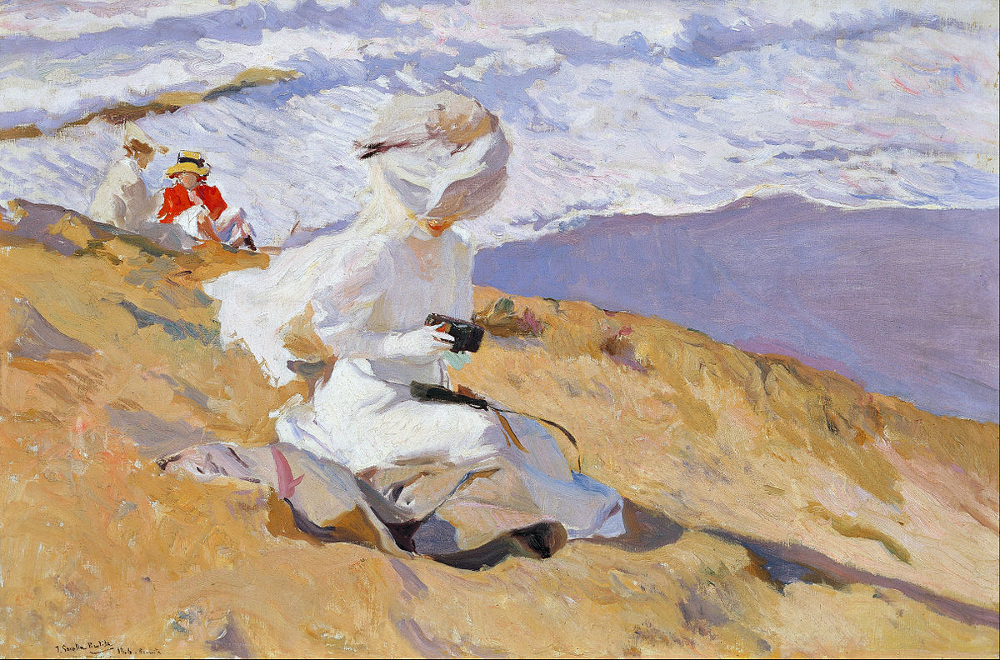

Słowa i obrazy
W lękliwych dłoniach
Prawda, to osobliwe, nie mieszkać więcej na ziemi,
ledwie poznanych zwyczajów więcej nie przestrzegać,
różom i innym rzeczom coś nam obiecującym
nie przydawać znaczenia ludzkiej przyszłości;
tym, czym się było w nieskończenie lękliwych dłoniach,
nie być już więcej i nawet własne imię
porzucić niczym połamaną zabawkę.
— Rilke w Pierwszej elegii duinejskiej, przeł. A. Lam
Joaquín Sorolla y Bastida „Instantánea”, 1906